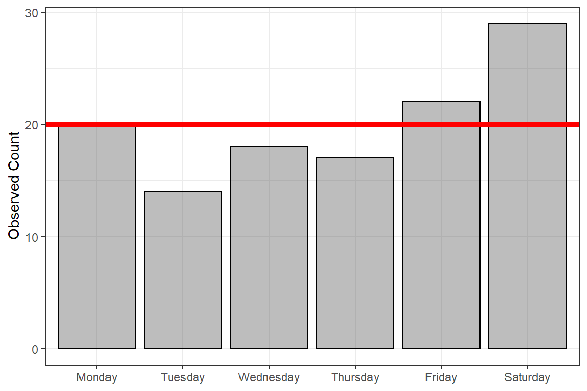

11 1-way Chi Square Test, “Goodness of Fit”
11.1 Chi Squared Distribution
data.frame(count = 0:50) %>%
dplyr::mutate(prob = dchisq(x = count, df = 1)) %>%
ggplot(aes(x = count,
y = prob)) +
geom_point() +
geom_segment(aes(xend = count,
y = 0,
yend = prob),
size = .1) +
theme_bw() +
scale_x_continuous() +
labs(x = "Count",
y = "Probability") +
theme(legend.position = "none")data.frame(count = 0:50) %>%
dplyr::mutate(prob = dchisq(x = count, df = 5)) %>%
ggplot(aes(x = count,
y = prob)) +
geom_point() +
geom_segment(aes(xend = count,
y = 0,
yend = prob),
size = .1) +
theme_bw() +
scale_x_continuous() +
labs(x = "Count",
y = "Probability") +
theme(legend.position = "none")data.frame(count = 0:50) %>%
dplyr::mutate(prob = dchisq(x = count, df = 20)) %>%
ggplot(aes(x = count,
y = prob)) +
geom_point() +
geom_segment(aes(xend = count,
y = 0,
yend = prob),
size = .1) +
theme_bw() +
scale_x_continuous() +
labs(x = "Count",
y = "Probability") +
theme(legend.position = "none")data.frame(count = 0:150) %>%
dplyr::mutate(prob = dchisq(x = count, df = 100)) %>%
ggplot(aes(x = count,
y = prob)) +
geom_point() +
geom_segment(aes(xend = count,
y = 0,
yend = prob),
size = .1) +
theme_bw() +
scale_x_continuous() +
labs(x = "Count",
y = "Probability") +
theme(legend.position = "none")data.frame(count = 0:150) %>%
dplyr::mutate(prob_2 = dchisq(x = count, df = 2)) %>%
dplyr::mutate(prob_5 = dchisq(x = count, df = 5)) %>%
dplyr::mutate(prob_20 = dchisq(x = count, df = 20)) %>%
dplyr::mutate(prob_100 = dchisq(x = count, df = 100)) %>%
tidyr::pivot_longer(cols = starts_with("prob"),
names_to = "df",
names_prefix = "prob_",
names_ptypes = list(df = factor()),
values_to = "prob") %>%
dplyr::mutate(mu = df %>%
as.character() %>%
as.numeric()) %>%
dplyr::mutate(df = paste0("df = ", df) %>%
factor(levels = c("df = 2",
"df = 5",
"df = 20",
"df = 100"))) %>%
ggplot(aes(x = count,
y = prob)) +
geom_point(alpha = .4) +
geom_segment(aes(xend = count,
y = 0,
yend = prob),
alpha = .4) +
theme_bw() +
scale_x_continuous() +
labs(x = "Count",
y = "Probability") +
theme(legend.position = "none") +
facet_wrap(. ~ df, nrow = 2, scales = "free_y") +
geom_vline(aes(xintercept = mu),
color = "red") 11.2 Chi Squared Test
The chisq.test() function in the base R stats package can be used to perform a Goodnes-of-Fit or one-way Chi-Squared test. This assesses if the observed counts are significantly different from a given profile. The comparison or expected counts may be based on all levels being equally likely or any other specification.
Steps: 1. Enter the data as a ‘concatinated vector’ and change it to the class ‘table’ 2. Perform the test, saving the model fit 3. Extract the observed and expected counts 4. Extract the test output 5. Write up the methods & results
11.3 Null Hypothesis: Equally Likely
Frequently we will to test if there is any difference between the counts in groups. This omnibus test compares the counts in each group to the uniform distribution. This means the expected count in all groups is the same. The expected counts may be found by dividing the total sample by the number of groups.
11.3.1 Ex. Senator Support
A Senator supports a bill favoring stem cell research. However, she realizes her vote could influence whether or not her constituents endorse her bid for re-election. She decides to vote for the bill only if 50% of her constituents support this type of research.
In a random survey of 200 constituents, 96 are in favor of stem cell research. Will the senator support the bill?
support against Sum
96 104 200 Defaults
- Null Hypothesis: “equally likely”
p = c(1/k, 1/k, 1/k, ... 1/k)
k = number of categories
support against
96 104 support against
100 100
Chi-squared test for given probabilities
data: .
X-squared = 0.32, df = 1, p-value = 0.571611.3.2 Ex. Books
Question:
Is there a difference in number of books checked out for different days of the week?
11.3.2.1 Enter observed counts
This example is given in the Barry Cohen textbook. The library counts the number of books checked out each day for a week. The counts are entered below.
my_book_counts <- c(Monday = 20,
Tuesday = 14,
Wednesday = 18,
Thursday = 17,
Friday = 22,
Saturday = 29) %>%
as.table()
my_book_counts Monday Tuesday Wednesday Thursday Friday Saturday
20 14 18 17 22 29 11.3.2.2 Perform the test, saving the model fit
NOTE: You do not need to declare any options inside the
chisq.test()function, as the default is to use equally likely probabilities.
11.3.2.3 Extract the observed and expected counts
You can ask for the observed counts. These are just the data your entered into the test.
NOTE: The observed counts MUST be whole numbers!
Monday Tuesday Wednesday Thursday Friday Saturday
20 14 18 17 22 29 You can also ask for the expected counts. The default is for each group to have the total sample divided equally.
NOTE: The expected counts CAN be decimal values.
Monday Tuesday Wednesday Thursday Friday Saturday
20 20 20 20 20 20 You can use the code below to create a single table with both the observed and expected counts, as well as the total for each.
rbind(Observed = fit_book_chisq_el$observed,
Expected = fit_book_chisq_el$expected,
Residual = fit_book_chisq_el$observed - fit_book_chisq_el$expected) %>%
as.table() %>%
addmargins(margin = 2) %>%
pander::pander()| Monday | Tuesday | Wednesday | Thursday | Friday | Saturday | Sum | |
|---|---|---|---|---|---|---|---|
| Observed | 20 | 14 | 18 | 17 | 22 | 29 | 120 |
| Expected | 20 | 20 | 20 | 20 | 20 | 20 | 120 |
| Residual | 0 | -6 | -2 | -3 | 2 | 9 | 0 |
11.3.2.4 Extract the test output
Chi-squared test for given probabilities
data: .
X-squared = 6.7, df = 5, p-value = 0.243911.3.2.5 Visualize
my_book_counts %>%
data.frame() %>%
ggplot(aes(x = Var1,
y = Freq)) +
geom_col(alpha = .4,
color = "black") +
geom_hline(yintercept = 20,
color = "red",
size = 2) +
theme_bw() +
labs(x = NULL,
y = "Observed Count")
11.3.2.6 Write-up
Methods
To assess if books are checked out uniformly throughout the week, a 1-way Chi Squared Goodness of Fit test was conducted.
Results
This one week provides no evidence that books are checked out more or less on any given day, \(\chi^2 (5) = 6.70\), \(p = .244\).
11.3.3 Ex. M & M Colors
11.3.3.1 Enter observed counts
tab_color_counts <- c(brown = 4,
yellow = 2,
red = 10,
green = 23,
blue = 14,
orange = 12) %>%
as.table()
tab_color_counts brown yellow red green blue orange
4 2 10 23 14 12 11.3.3.2 Perform the test, saving the model fit
NOTE: You do not need to declare any options inside the
chisq.test()function, as the default is to use equally likely probabilities.
11.3.3.3 Extract the observed and expected counts
You can ask for the observed counts. These are just the data your entered into the test.
NOTE: The observed counts MUST be whole numbers!
brown yellow red green blue orange
4 2 10 23 14 12 You can also ask for the expected counts. The default is for each group to have the total sample divided equally.
NOTE: The expected counts CAN be decimal values.
brown yellow red green blue orange
10.83333 10.83333 10.83333 10.83333 10.83333 10.83333 You can use the code below to create a single table with both the observed and expected counts, as well as the total for each.
rbind(Observed = fit_chisq_el$observed,
Expected = fit_chisq_el$expected,
Residual = fit_chisq_el$observed - fit_chisq_el$expected) %>%
as.table() %>%
addmargins(margin = 2) %>%
pander::pander()| brown | yellow | red | green | blue | orange | Sum | |
|---|---|---|---|---|---|---|---|
| Observed | 4 | 2 | 10 | 23 | 14 | 12 | 65 |
| Expected | 10.83 | 10.83 | 10.83 | 10.83 | 10.83 | 10.83 | 65 |
| Residual | -6.833 | -8.833 | -0.8333 | 12.17 | 3.167 | 1.167 | 7.105e-15 |
11.3.3.4 Extract the test output
Chi-squared test for given probabilities
data: .
X-squared = 26.292, df = 5, p-value = 7.831e-0511.3.3.5 Write-up
Methods
To assess if my bag of M & M’s supports the hypothesis that all colors are equally produced, a 1-way Chi Squared Goodness of Fit test was conducted.
Results
Statistically significant evidence was found that not all the colors are equally produced, \(\chi^2 (5) = 26.29\), \(p < .001\). There were fewer brown and yellow, as well as more green, than would be expected.
11.4 Null Hypothesis: a Specific Distribution
11.4.1 Ex. M & M Colors
Years ago, the Mars company used to post the ‘color breakdown’ for each type of M & M it produced on its website. The information has since been removed, but the last time I checked it claim that plain, milk chocolate M & M’s consisted of:
- 13% brown
- 14% yellow
- 13% red
- 16% green
- 24% blue
- 20% orange
11.4.1.1 Perform the test, saving the model fit
NOTE: You DO need to declare any options inside the
chisq.test()function, as the default is to use equally likely probabilities.
To compare observed counts to a specified distribution, you need to add that breakdown of 100% (or probability of 1.0) inside the chisq.test(). Make sure that your probabilities add up to EXACTLY ONE! If ther are off by even .00001, it will not run and give and error instead.
11.4.1.2 Extract the observed and expected counts
You can use the code below to create a single table with both the observed and expected counts, as well as the total for each.
rbind(Observed = fit_chisq_hist$observed,
Expected = fit_chisq_hist$expected,
Residual = fit_chisq_hist$observed - fit_chisq_hist$expected) %>%
as.table() %>%
addmargins(margin = 2) %>%
pander::pander()| brown | yellow | red | green | blue | orange | Sum | |
|---|---|---|---|---|---|---|---|
| Observed | 4 | 2 | 10 | 23 | 14 | 12 | 65 |
| Expected | 8.45 | 9.1 | 8.45 | 10.4 | 15.6 | 13 | 65 |
| Residual | -4.45 | -7.1 | 1.55 | 12.6 | -1.6 | -1 | -3.553e-15 |
11.4.1.3 Extract the test output
Chi-squared test for given probabilities
data: .
X-squared = 23.674, df = 5, p-value = 0.000250811.4.1.4 Write-up
Methods
To assess if my bag of M & M’s supports the reported color breakdown that used to be listed on teh Mars website, a 1-way Chi Squared Goodness of Fit test was conducted.
Results
Statistically significant evidence was found that the color breakdown has changed since the website posting, \(\chi^2 (5) = 23.67\), \(p < .001\). There were fewer brown and yellow, as well as more green, than would be expected if it were still the same.